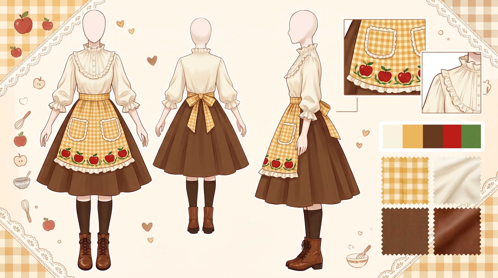
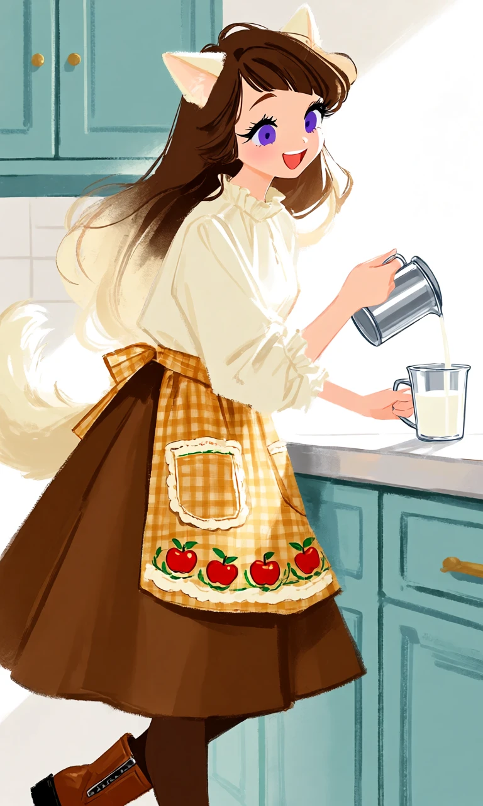

Apple Crumble Kitchen

Outfit Prompt
A warm cream cotton blouse with a small ruffled collar and elbow-length sleeves, tucked into a chestnut-brown A-line midi skirt. A golden-ochre gingham waist apron with deep pockets, cream edging, and embroidered apples along the lower hem. Brown opaque tights and comfortable chestnut leather ankle boots. The apron ties above the tail.
Outfit Examples

